最短路径：先看这一张
3 分钟复核完，只要读这一节 + 下面那 5 张去色以后仍然读得出：远端这一路塌成一条直线，本地那一路照旧有底噪、包络还在， 告警横幅把「哪一路」和「从 20:57 起」写在同一行里。
颜色在这套界面里只分两种意思——活着与出事了。它从来不单独承担一句话： 塌陷的形状、包络的高低、徽标里的勾与叉、横幅上的字，四样各自都成立。 这一条是 spec 的骨头（硬门槛 1–3、7），所以它排在最前面。
这张图shots/live-lost-one-gray-1440.png
点图打开原图。灰度版与彩色版是同一个状态（?state=lost-one）的两份渲染。
会中 · 4 张关键截图
章 0 点名的 5 张里，4 张在会中 · 缩略图统一高 16rem，点开看原图全文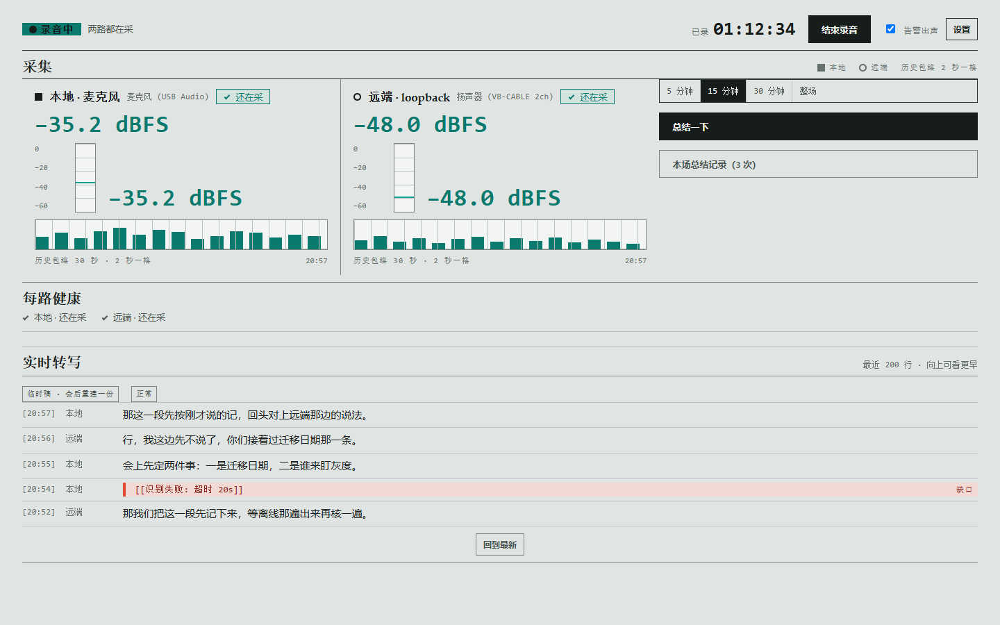
两路包络的形状不一样：本地那一路有底噪、柱子一直在 30–70 之间；远端那一路柱子矮而稀，因为 loopback 遇静音写下的是一串精确的零。峰值保持线比当前读数高，说明它刚才响过。这一条就是「电平表能读活着」，不靠任何动画。
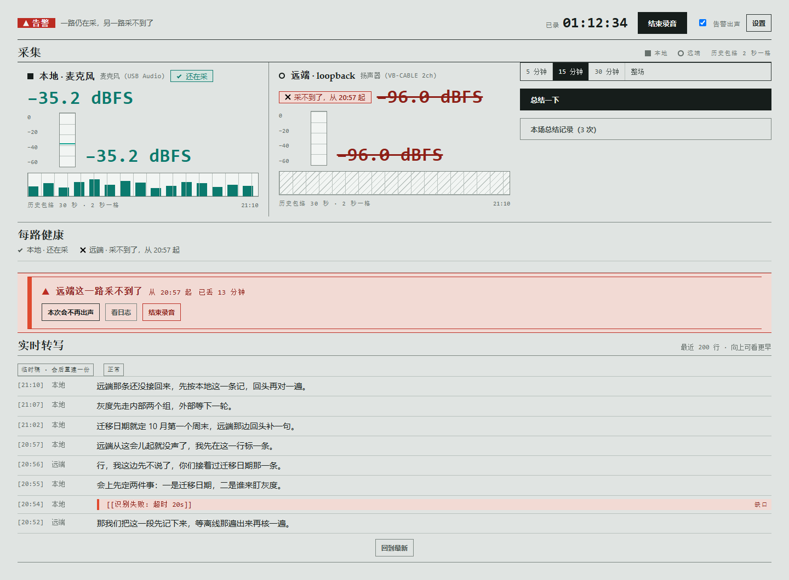
远端塌成直线、读数 −96.0 dBFS、徽标打叉；同一屏里本地仍是 −35.2 dBFS、包络还在动、时长还在走。「哪一路死了」与「另一路还活着」在同一屏上同时成立，这是本设计最不能丢的一件事。
同一张图去掉全部颜色：塌陷的那一路、床面压的斜纹、打叉的徽标、整行横幅 —— 全都还在。硬门槛 1–3 要的就是这一句：颜色从不单独承担一个结论。
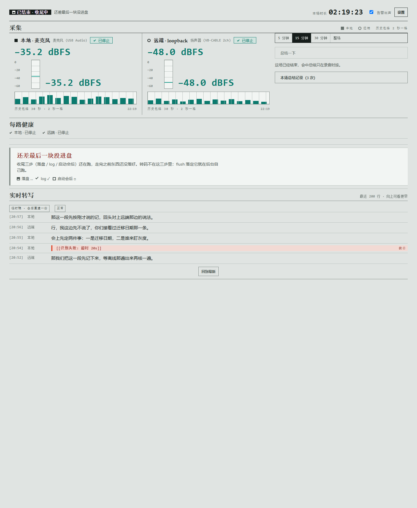
时长已经冻在 02:19:23，收尾带是 quiet 的边线小块：三步（落盘 / log / 启动会后）各带状态，收尾横幅只说「还差最后一块没进盘」。V1 的收尾最长能跑到 300 秒，这段时间里说成「已完成」，人就会去关机、丢掉这场会 —— 所以「能不能关机」只由这一小块回答。
会中 · 其余 7 张
空闲 / 录音中 / 告警 / 心跳失联 / 已结束，各带一档 390；末尾 4 张与上面第二段重复，是同一批图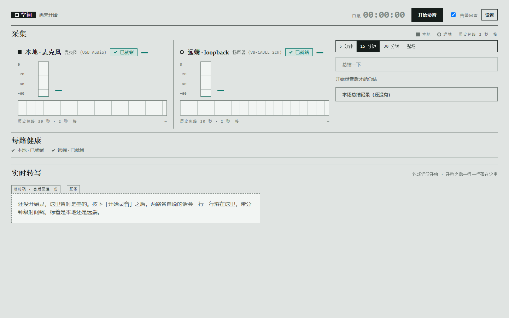
开始之前就把「这一场录哪几路」写死：两路各自一行设备名 + 已就绪，旁边是开始按钮与告警出声开关。总结按钮这一档灰着，下面那句「开始录音后才能总结」也在（禁用就得写明为什么）。三种场景（两路 / 只本地 / 只远端）在按下开始之前就已经在界面上分清了。
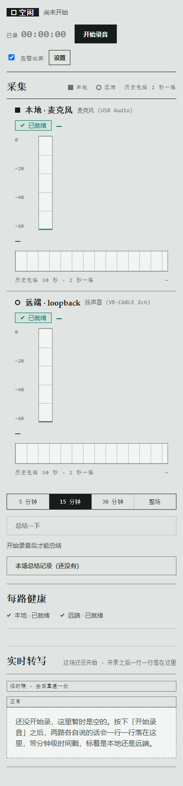
390 下设备名与就绪状态一个都没折起来，也没有横向溢出。窄屏砍的是「读的」，开始之前要确认的这几样属于「看的」，不砍。（窄屏整页很长，框里露出的是首屏，点开看全文。）
两路都在动，而且动得不一样：本地的底噪把包络铺得又高又密，远端矮而稀。峰值保持线压在柱子上方 —— 「刚才有声音」是画在形状里的，静态图就读得出来，不需要动画中间帧。
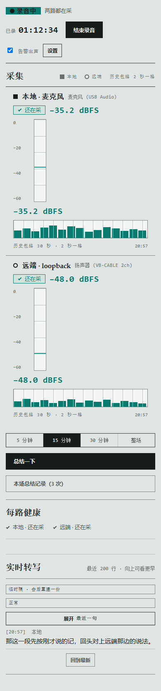
390 下两块电平上下堆叠、仍在同一屏里，各自保留 dBFS 刻度、峰值保持与 30 秒包络。采集相关的信息在任何宽度下都不砍 —— 这一条只能靠图核。
远端读数 −96.0 dBFS、15 根柱子全部落到零位线上；本地还是 −35.2 dBFS、包络照旧。横幅写出「远端这一路采不到了」+「从 20:57 起」+「已丢 13 分钟」。告警期间录音仍在继续，没有把整页变成一张告警页。这一屏上的时间互相自洽：横幅那两个数说的「现在」是 21:10，两路包络的时间戳就是 21:10，转写正文也写到 21:10（远端没了以后这 13 分钟是本地这一路在录）。
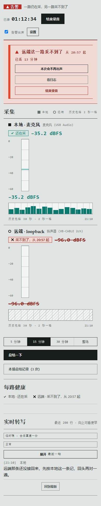
窄屏下出事的那一路和没出事的那一路都还在这一页里，塌成直线的那块没有被挤到折叠区。远端那块落在首屏之外（它的 y 区间是 862–1269，390×844 一屏装到 844 为止），要往下滑一段才看得到 —— 这条弱点照实写在章 9.7 与 9.10 里。告警按钮竖排，读数没有溢出。
去色之后：塌陷、斜纹床面、打叉的徽标、整行横幅靠明度差仍然最显眼；两条通道仍靠标题里的「本地 / 远端」与各自的设备名分得开。硬门槛 1–3 的灰度自检就落在这一张上。
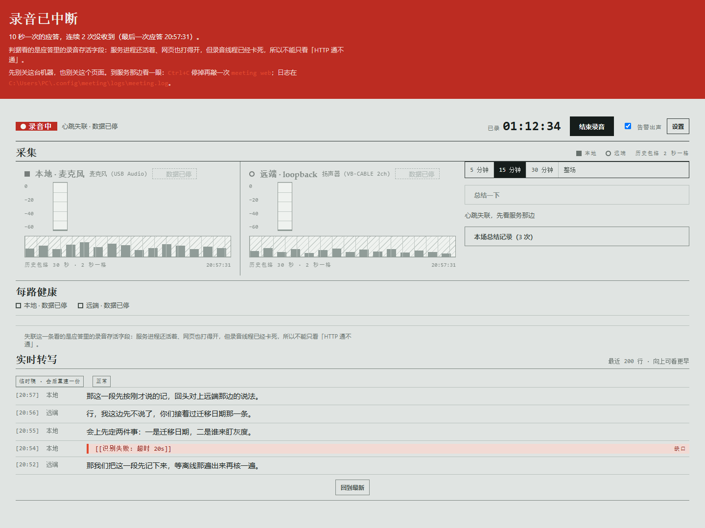
全屏横幅写着「录音已中断」，并交代判据：10 秒一次的应答连续两次没收到。两路电平同时冻结压灰、读数退成「—」、健康位写「数据已停」，包络时间戳停在最后一次应答那一刻 —— 界面看不见服务了，就不把估出来的数据继续画成在动，也不肯说「还在采」。这一屏上关于「出事了」的话只有全屏横幅一处：那条「远端这一路采不到了」属于另一个状态，不跟「整场录音已中断」同屏。
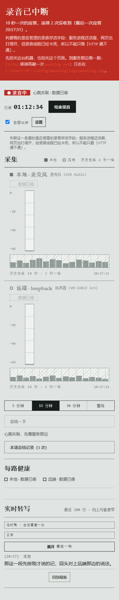
390 下横幅不横向溢出，「先别关机、到服务那边看一眼」那段处置说明仍然整段可读 —— 心跳失联是最需要照做的文案，窄屏不能把它省掉。
「已结束」有两副面孔，都住在收尾那一小块：收尾还在跑写「还差最后一块没进盘」+ 落盘 / log / 启动会后三步各带状态；落定了才写「录音已落盘」。收尾是家务，带子是 quiet 的边线小块，不用告警带或致命色（ui-design 章 4.2 二）。这张图是收尾中那一档（ended-draining），已完成与收尾失败两档走下面的可点直达。
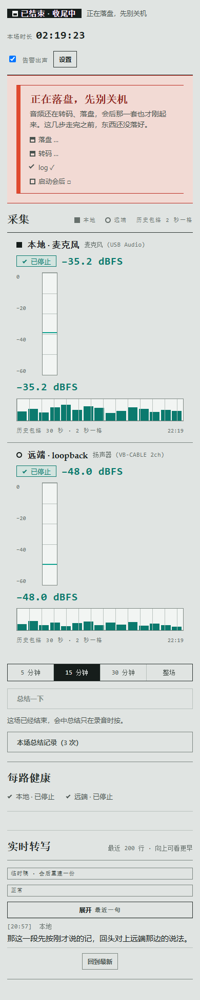
三步收尾明细折到窄屏上仍然一行一项，没有因为变窄就把「哪一步没走完」藏起来。能不能关机这件事不随屏幕宽度改变。
会后 · 4 张
进行中与已完成各带一档 390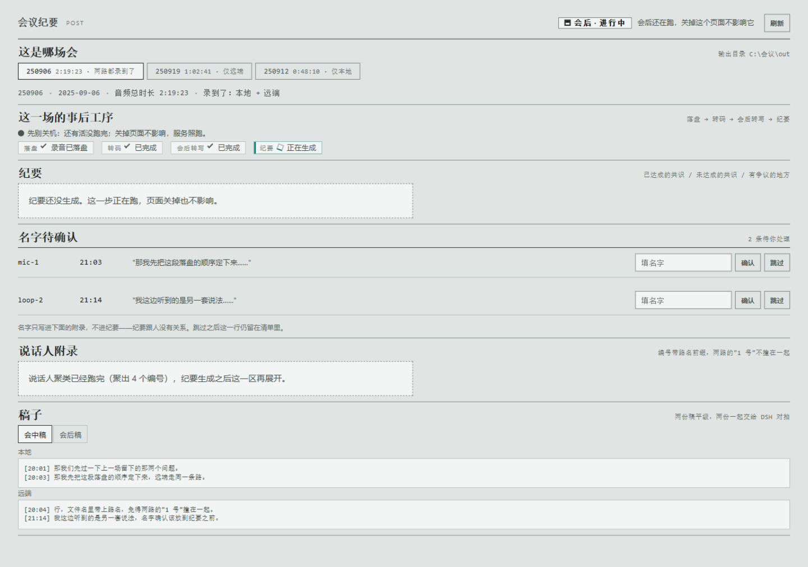
事后工序链上「纪要」那一段在跑（spinner + 实心色条），其余三段带各自的人话现状；「能不能走」写着先别关机。手机拍下这一屏去睡觉就够了：它回答的是「还值不值得守着」。纪要写完之后轮到的「名字待确认」也已经在下面摆出来了 —— 2 条待你处理，是这一页上唯一需要你动手的地方。（38817ecf 随新屏改写：旧稿的进度五步换成了这条链。）
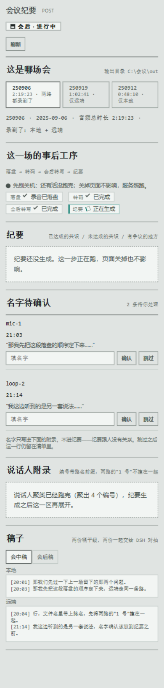
窄屏下一步折成两行：第一行是图形 + 步骤名，第二行才是状态与耗时。中文没有被压成一列一个字，「跑到哪了」这句答案仍然一眼读得出。
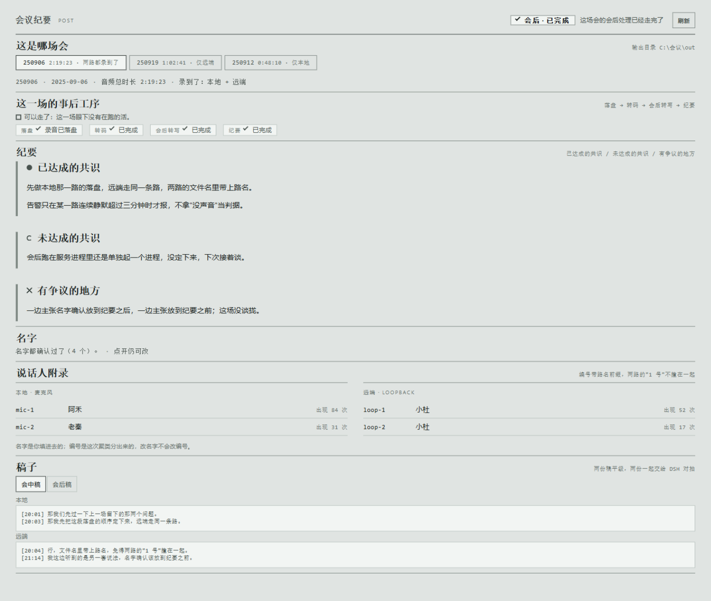
工序链收成四段全勾的一行、「能不能走」说可以走了；纪要在主位（共识 / 未达成 / 争议），说话人附录排在后面，编号带路径前缀（mic-1 / loop-1），两路的「1 号」不会撞车。选择的场次是默认选中那一场 250906：选择器第一项带实心底，元信息行写着同一场（2:19:23 · 录到了：本地 + 远端）。四个编号都确认过名字，名字那一区因此收成一行；需要你动手的那份待确认名单在 ?state=empty 那一档（那一场编号齐、名字还没填）。最下面那一块「稿子」默认落在会中稿、两份平级可切（38817ecf 随新屏改写）。
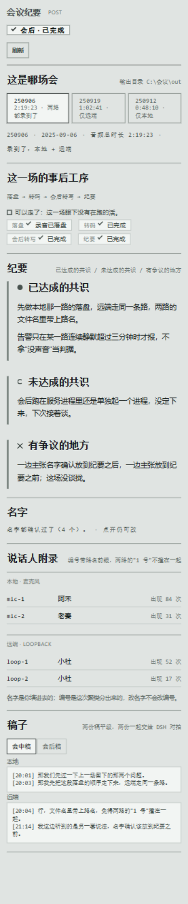
窄屏下纪要仍然占着可读排版的主位，转写与附录折在下面 —— 「砍读的、不砍看的」这条原则在会后视图上的兑现就是这一屏。四个编号都带着名字一路排下来，两路的「1 号」各有各的前缀；场次那一带在 390 下是三个选择项各占一行，250906 那一项带实心底。
会中视图 · 19 个状态可点直达
live.html?state=… · 取值与 live.html 脚本里的 STATES 对象逐字一致?state=idle 空闲：两路设备都「已就绪」，时长 00:00:00，总结按钮禁用并写明为什么。证明「这一场录哪几路」在开始之前就已经定了。这一档的转写区给空态文案（还没开始录），总结记录那一行写「本场总结记录（还没有）」——没开始录的时候，屏幕上不会出现一份不存在的转写。
?state=idle-untouched 空闲：两路都「未探测」—— 服务还没给出探测结果时的降级形态，界面在这种时候也不假装知道。
?state=idle-device-fail 空闲：远端「探测失败 · 没有能打开的端点」—— 这一路一个能打开的端点都没有，开始之前就当场说，省得录了两小时才发现这一路根本没接上。
?state=recording 录音中：两路都在采（本地 −35.2 dBFS / 远端 −48.0 dBFS），转写健康「正常」，时长在走。主视图一屏装下。
?state=recording-transcript-behind 录音中 + 提示级：实时转写落后约 2 分钟。只有一行字，不出声、不弹横幅 —— 提示级与致命级在这里就分开了。
?state=lost-one 告警：远端采不到了（−96.0 dBFS、包络塌成直线、从 20:57 起、已丢 13 分钟），本地照常 −35.2 dBFS 且时长继续走。致命级横幅 + 出声 + 「本次会不再出声」。
?state=lost-one-restored 告警 → 录音中：丢的那一路接回来了，横幅收起，徽标留下「20:57–21:10 丢过 13 分钟」这条倒查记录。恢复不等于没发生过。
?state=heartbeat-late 录音中 + 弱提示：一个周期没收到应答（迟到 8 秒）。一行字，不出声、无横幅。
?state=heartbeat-lost 心跳失联：连续两个周期没收到应答。全屏横幅写「录音已中断」，两路电平冻结压灰、读数退成「—」、健康位写「数据已停」，包络时间戳停在最后一次应答那一刻。告警区整块收掉 —— 「远端这一路采不到了」说的是另一件事，不能跟「整场录音已中断」同屏。
?state=heartbeat-recovered 心跳恢复：横幅自动消失，两路读数与服务时间戳回到实时，状态区旁留一条短记录「已恢复，中断 42 秒」，转写区在中断那一格留一条断口。心跳不占顶层状态，因为它描述的是界面与服务之间的事。
?state=ended-draining 已结束 · 收尾中：时长冻结在 02:19:23，收尾三步（落盘 / log / 启动会后）在跑，quiet 收尾带说「还差最后一块没进盘」。这时候说成「已完成」，人就会去关机。
?state=ended-done 已结束 · 已完成：收尾三步都落定（启动会后停在等待也算落定），quiet 收尾带这才写「录音已落盘」。
?state=ended-drain-failed 收尾失败：落盘那一步打叉、写出原因（远端这条音频没写进盘：磁盘只剩 120 MB）、给 log 路径与可复制的命令，并且绝不说「已落盘」。没有独立截图，靠这条链接复核。
?state=summary-running 总结进行中：按钮变「正在总结刚才的 15 分钟…」，转圈十到十五秒。没有独立截图，靠这条链接复核。
?state=summary-result 总结结果面板：刚才在讲什么 / 讲到哪儿了 / 丢掉了什么，只有几条、关掉即消失、不落文件。没有独立截图，靠这条链接复核。
?state=summary-log 本场总结记录回看：这一场按过的几次总结（三次，各带窗口与时刻）。存本场内存、会话结束即失，与纪要分开。它与「总结结果面板」共用一块面板，按状态换标题与正文——空闲态那一档展开的是空态文案（一次都还没按过）。
?state=settings-open 设置展开：设备 / 告警开关 / 心跳频率 / 快速总结（默认窗口 + 模型下拉）。默认收起，不占主视图；填错当场说（心跳只能 1–60 秒）。ASR 那五个参数不进这扇窗（设计意图第 14 条）。
?state=start-failed 开始失败：说清哪一路起不来、为什么、log 在哪。不让人对着按钮猜。
?state=start-rejected 开始被拒：已经有一场在录（250906，已录 41 分钟）。同一时刻只录一场，这条拒绝理由写在界面上。
会后视图 · 6 个状态可点直达
post.html?state=… · 取值与 post.html 脚本里的 STATES 对象逐字一致?state=running 进行中：工序链上「纪要」那一段在跑（spinner + 实心色条），「能不能走」写着先别关机。关掉这个页面不影响它 —— 状态在服务那边。
?state=not-started 会后还没开始：工序链上只有「落盘」收了场，其余三段停在「还没跑过」（转写与纪要把「按哪个按钮起」写在句子里）。「能不能走」说可以走了。
?state=done 已完成：工序链四段全勾 + 纪要三格齐 + 附录四个编号都带名字 + 「稿子」那一块（会中稿 / 会后稿平级可切）+ 会中总结空态示例那一格。名字都确认过了，所以那一区收成一行。
?state=empty 空态：切到的是空态样本那一场 250919（只有 loopback 一路，选择器上写着 1:02:41，实心底与场次元信息行跟着切过去），这一场有音频，但会中总结什么都没产出（39 字节那类）。纪要不依赖它 —— 那句「会后纪要不依赖它，两条转写都在下面」写在这一档里。名字待确认名单也只在这一档出现：2 条待你处理（编号是 loop-1 / loop-2，这一场没有 mic 那一路），是这一页上唯一需要你动手的地方。
?state=failed 失败态：离线转写那一步失败（文件被截断），后面全部「上一步失败，先修它」，给可复制的命令与 log 路径。界面上没有「重跑」按钮。
?state=no-meetings 没有场次：输出目录里还没有会。空态在这一页上写着一句「先敲 meeting web 录一场」，照着敲就能录上第一场。
会中主视图 · 两路并列在一条采集带上
同一份 token、同一份 ui.css、同一套状态表；采集带用 .m-band--split 的两列写法仪表盘式（选中）
两路电平左右并列在同一条采集带上，告警横幅插在采集带之外，采集之外的一律排在带子下面。
选它的理由只有一条：本设计的骨头是「一眼看出哪一路死了，同时一眼看出另一路还活着」。两路并列在一条带上，两块表天生同屏，告警横幅又不侵入任何一块表 —— 「告警期间录音仍在继续」这句话在界面上只有这一个正确形状。
没有独立截图的状态 · 点这里复核
15 张装不下这些；能切出来 + 写明，就有据可查下面 8 条逐个占一行，截图之外的状态也都在这里。复核时按状态名点进去看。
顺带说清缺省档：不带 ?state= 直接打开时，live.html 落在空闲态（state=idle），post.html 落在已完成那一档（state=done，也就是默认选中最近一场 250906 的结果）。想切哪一档就照上面的链接加参数。
live.html?state=heartbeat-late 心跳迟到：弱提示这一级到底长什么样，与失联那一级的差别就在这里。
live.html?state=heartbeat-recovered 心跳已恢复：横幅消失之后留下的那条短记录。
live.html?state=lost-one-restored 丢过又接回：恢复之后健康徽标怎么保留倒查记录。
live.html?state=recording-transcript-behind 转写落后：提示级告警只上界面、不出声这条口径的落点。
live.html?state=idle-untouched 设备未探测：服务还没给出探测结果时的降级形态。
live.html?state=idle-device-fail 设备探测失败：这一路一个能打开的端点都没有时的界面形态。
live.html?state=settings-open 设置展开：设备 / 告警 / 心跳频率 / 快速总结几组摆在哪（ASR 参数不进这扇窗）。
live.html?state=ended-drain-failed 收尾失败：这时候界面上不说「已落盘」，也不出现「重跑」按钮。这一档屏幕上说「出事了」的横幅只有收尾那一条 —— 通道失效横幅（远端这一路采不到了）属于录音还在跑却丢了一路的告警态，不与它同屏。
复核时怎么核
灰度 把 live-lost-one-gray-1440.png 与彩色那张并排看：去色后「哪一路死了」还在，告警还是最显眼的一处。（硬门槛 1–3）
一屏 1440×900 不滚动就能看到状态、时长、两路电平、每路健康、告警区、总结入口。19 个状态逐个量过，这六样元素的底边逐档都在 900 以内；收尾带 #drain-band 自收尾带换 quiet 那一轮起不算六样，单独量也 ≤900，量法与选择器口径见 ui-design 章 8 门槛 5。（硬门槛 5）
可见性 横幅、明细、名单这类东西不能只看 DOM 里有没有 —— 要读 getComputedStyle 的 display 与实际高度。这一轮的阻断项就出在这里：收尾中与已完成两档的横幅 DOM 里都在、计算样式却是 display: none，屏幕上只剩一条 14px 高的空带子。逐档核过的 26 个取值 × 两档宽度里，「该显示却没显示」的 0 个。
导航条 会中稿底部那条复核用的导航条（切换状态、跳会后）默认不显示：地址后面加 ?nav=1 才出来（与 ?state= 并存）。门槛 5 要的是界面本身，那条导航条会把它顶出 900。
窄屏 390 下关键元素仍可见、不重叠、不横向溢出；采集相关的信息一个都没砍。（硬门槛 6）
离线 本页与四个 mockup 只引用同目录的 tokens.css 与 ui.css；断网打开与联网一模一样。图片全在同目录下那个 shots 文件夹里。（硬门槛 7）
动效 系统里打开「减少动态效果」再看：跳与不跳读到的是同一件事 —— 「刚才有声音」画在包络那 15 根柱子的高度里。（硬门槛 9）
文案 告警文案必须写出是哪一路、从什么时候起；错误文案说明发生了什么与怎么办，说人话。（硬门槛 11）
键盘
按 Tab 从顶上走一遍：截图、状态链接、会中与会后两页的入口全部有可见的焦点环（--color-focus 的 2px 实线）。本页所有可点的东西都是原生 <a>，没有用脚本伪造可点区域。